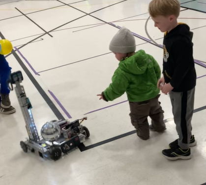

Our Misson
Here at Lindbergh Robotics, we are dedicated to creating a stronger and more inclusive STEM environment within our school district. Our goal is to inspire and prepare the next generation of innovators by teaching hands-on skills in robotics, engineering, and teamwork.
Through designing, building, and programming robots, we give students the opportunity to explore real-world problem solving while developing creativity, leadership, and collaboration. We also work with younger students to spark early interest in STEM, showing them that technology and innovation are not just concepts—they are things they can create.
By growing our program, we aim to build a community where students are encouraged to dream big, learn from challenges, and push the boundaries of what’s possible.
Here at Lindbergh Robotics, we are dedicated to creating a stronger and more inclusive STEM environment within our school district. Our goal is to inspire and prepare the next generation of innovators by teaching hands-on skills in robotics, engineering, and teamwork.
Through designing, building, and programming robots, we give students the opportunity to explore real-world problem solving while developing creativity, leadership, and collaboration. We also work with younger students to spark early interest in STEM, showing them that technology and innovation are not just concepts—they are things they can create.
By growing our program, we aim to build a community where students are encouraged to dream big, learn from challenges, and push the boundaries of what’s possible.
Through designing, building, and programming robots, we give students the opportunity to explore real-world problem solving while developing creativity, leadership, and collaboration. We also work with younger students to spark early interest in STEM, showing them that technology and innovation are not just concepts—they are things they can create.
By growing our program, we aim to build a community where students are encouraged to dream big, learn from challenges, and push the boundaries of what’s possible.
Our Misson
Upcoming Competetions and Events
FTC Robtoics Comp
November 15
Location: St. Louis, MO